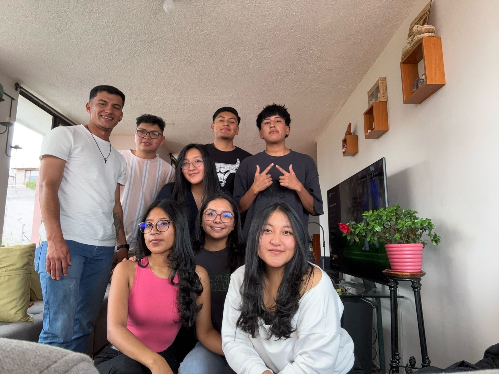
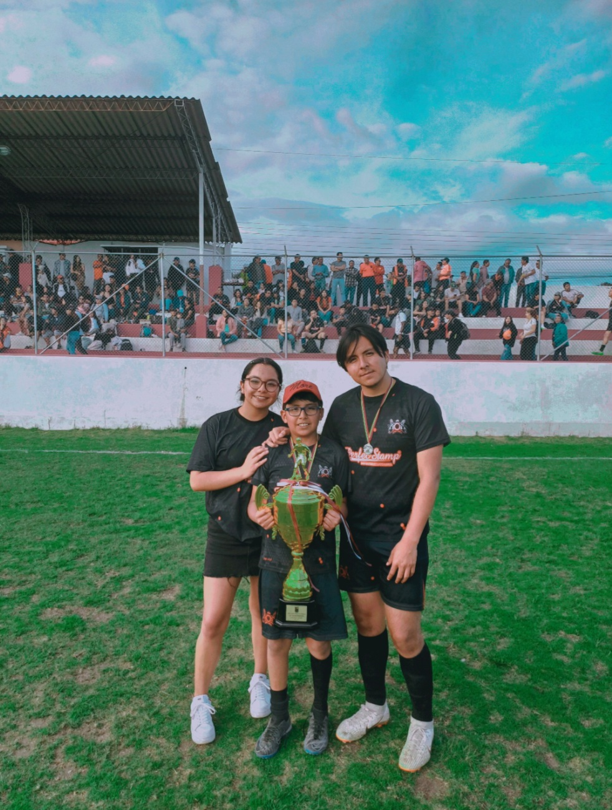
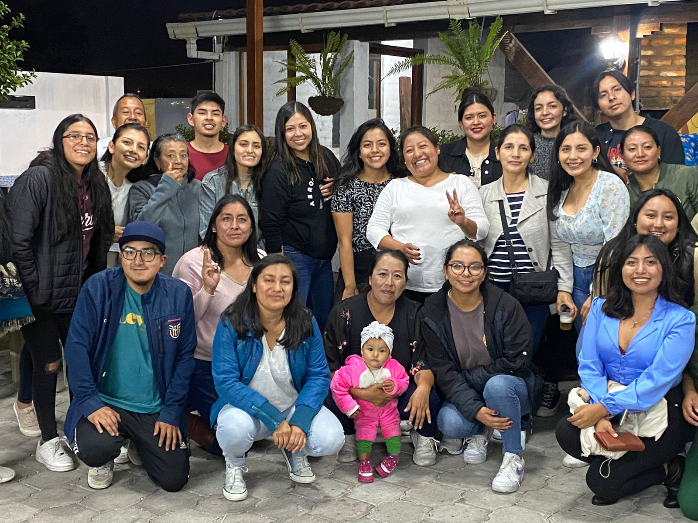

Mis hobbies
En mi tiempo libre disfruto de actividades que me ayudan a mantenerme activa, creativa y feliz. Algunos de mis pasatiempos favoritos son:
-
Escuchar música, especialmente mi género favorito que es el rock español.
-

Explorar nuevas herramientas digitales y de diseño creativo.
-

Salir con amigos y conocer nuevos lugares.
-

Ver documentales y series sobre historia y tecnología.
-

Ir al estadio con mi familia a disfrutar de los partidos.
-
Leer libros de romance y desarrollo personal.
-

Pasar tiempo con mi familia y compartir momentos especiales.
-

Preparar postres para mis amigos o familia.